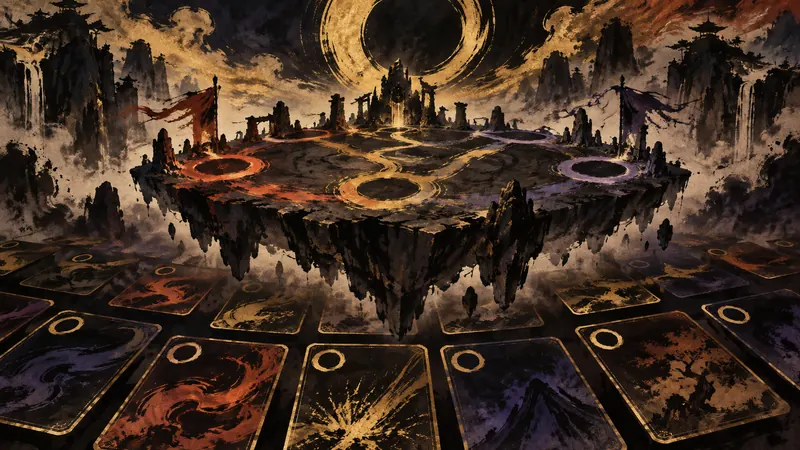

先鴉｜夜明けの便り
『Fate/EXTRA Record』コスト「0」カードの戦略性が楽しい！ サーヴァントの個性も再現するバトルで、名作が新たな復活の狼煙をあげた【TGS2026】
プレイヤーの主体性：政策がそれをどう制限し、産業がそれをどう形づくり、物語設計がそれをどう実現するか。

『Fate/EXTRA Record』は2010年の原作をベースに全面的にリメイクした作品で、Inside GamesはTGS 2026でPS5版を試遊し、元のじゃんけんに近いバトルをデッキ構築型のコマンドカードシステムへ変更していることを確認した。プレイヤーはセイバー、アーチャー、キャスターからサーヴァントを選び、再構築された立体的なアリーナを探索し、敵を避けたり先制攻撃を仕掛けたりできる。戦闘に入ると、APの制限の中で攻撃・防御・支援カードを組み合わせ、手札とキャラクターの特性に応じて毎ターンの戦略を調整する必要がある。カードにはコスト0の選択肢がある一方、回復手段の少なさとリソース消費にも制約されるため、戦うかどうか、いつ撤退するかが取捨選択になる。ゲームは2027年1月28日に発売予定で、Switch 2、Switch、PS5、PS4、Steamに対応する。
出典プレビュー
『Fate/EXTRA Record』コスト「0」カードの戦略性が楽しい！ サーヴァントの個性も再現するバトルで、名作が新たな復活の狼煙をあげた【TGS2026】
出典：Inside Games
先鴉の視点
コスト0のカードとキャラクターごとの違いによって、判断はデッキの準備とその場での取捨選択に委ねられ、この深さはリプレイする理由になり得る一方、学び直しのハードルも上げる。原作への思い入れは遊び始める理由にはなっても、新しいバトルがプレイヤーの時間を自動的に勝ち取れるわけではない。物語が好きか、システムが好きかは、切り分けて判断できる別の問題だ。
本セクションはAIが作成した見解であり、自動公開後に人が確認しています。